Open the live dashboardCode and data on GitHub
How we used GENCO and real geodata to screen where a solar plant can connect
A plain-language walkthrough of the case study: what question it answers, what GENCO is and how it was used, where the real geographic data comes in, how the results were checked, and what the maps mean.
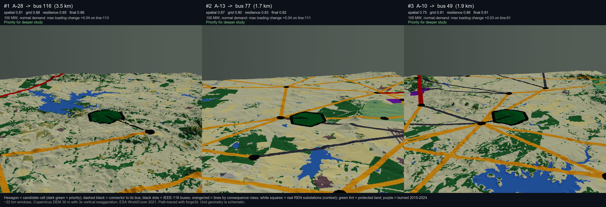
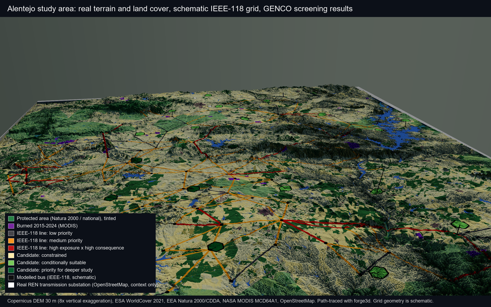
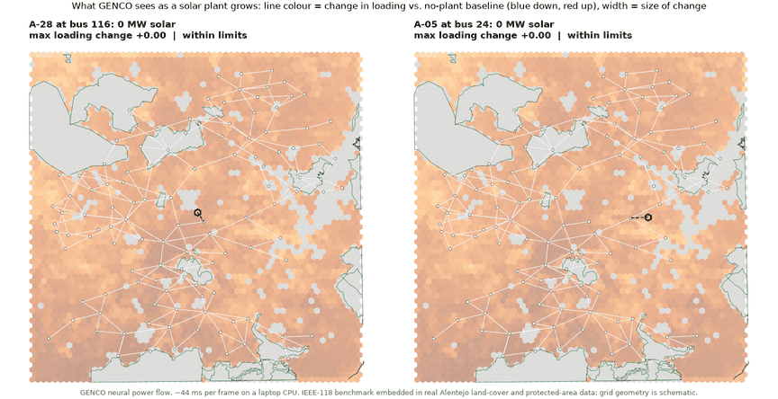
1. The problem in one paragraph
A solar developer picks sites by looking at land: sunshine, slope, protected areas, how far the nearest substation is. The grid side usually comes later, as a slow, expensive interconnection study on a handful of sites. By then the choice is mostly made. GeoGridLens flips that order. It screens the grid impact of every plausible site, under many operating conditions and line outages, early enough to shape the shortlist. That is only practical because GENCO can solve a power-flow case in tens of milliseconds instead of running a full numerical solver thousands of times.
Everything on the land side is real open data. The grid itself is a standard benchmark network drawn over that landscape, because Portugal's real transmission model is not public. We keep the two clearly separated throughout.
Who this is for
Solar developers
You already screen land for sun, slope and permits. This adds the question the grid will ask later, for every site at once: will this connection be comfortable at 50, 100 or 200 MW, in a quiet week and in a peak week, and if a nearby line is out? Sites that look equal on land can differ by a factor of two on the grid.
Environmental and regional planners
You decide which land is off the table. Here the exclusions come first, from real protected-area, water and settlement data, and the grid screen runs only on what is left. The wildfire map adds a second environmental lens: which corridors through fire-prone land the grid would miss most if they burned.
GENCO is the piece that makes this affordable. A conventional solver run per site, condition and outage is a study budget; a neural power-flow run is a few milliseconds, so the whole matrix fits in a coffee break and can be re-run whenever a layer, a weight or a site list changes.
2. What GENCO is, in plain terms
A power flow is the basic calculation grid engineers run: given how much power every load consumes and every generator produces, and how the lines are connected, what voltage does each bus (substation node) sit at and how much power flows down each line? Classical solvers (Newton-Raphson, as in pandapower or MATPOWER) iterate to an exact answer. They are accurate but each run costs real time, and some cases simply fail to converge.
GENCO is a neural network from the GridFM project (IBM Research and partners) that has learned to answer the same question directly. It is a graph neural network: buses are nodes, lines are edges, and it reads the same inputs a solver would (loads, generator setpoints, line impedances, which lines are in service) and predicts the voltages. From those voltages the line flows and loadings are reconstructed with the physics equations. The released model we used was trained on PFDelta Task 1.3, a public dataset of hundreds of thousands of solved IEEE-118 cases, including cases with lines removed.
What goes in
One operating snapshot of the 118-bus network: demand at each bus, generator outputs, line parameters, and a 0/1 flag per line for in or out of service.
What comes out
Voltage magnitude and angle at all 118 buses, from which we compute active and reactive flow on all 186 branches and the loading ratio (flow divided by the line's rating).
Why it matters here
One inference takes about 44 ms on a CPU, and the cost does not grow with how hard the case is. A matrix of 2,184 cases runs in a few minutes, reproducibly, every time the inputs change.
What it is not
It is not a replacement for a solver when you need a certified answer. We use it as a screen and verify a documented subset with the classical solver.
3. The case study setup
Study area
A box from Évora in the north to south of Beja, including the Alqueva reservoir and the Guadiana valley (longitude −8.45 to −7.30, latitude 37.80 to 38.70). It is one of Europe's best solar regions, has large Natura 2000 sites, a big reservoir, and a real wildfire history, so every layer in the method has something to say.
The proposed asset
A solar plant with an optional 50 MW battery, screened at 50, 100 and 200 MW. In the model it is a fixed power injection at the bus the site connects to, scaled by a capacity factor for each operating condition (for example 80 % output under normal demand, 100 % in the high-renewable condition).
Real data layers real
| Layer | Source | What it decides |
|---|---|---|
| Terrain and slope | Copernicus DEM, 30 m, via Microsoft Planetary Computer | Constructability score (flat is good) |
| Land cover | ESA WorldCover 2021, 10 m | Land suitability (grassland best, forest and built-up poor, water excluded); fuel load for wildfire |
| Protected areas | EEA Natura 2000 (2024) and national designations (CDDA) | Hard exclusion above 25 % overlap, penalty below |
| Burned areas | NASA MODIS MCD64A1 monthly burned area, 2015 to 2024 | Wildfire exposure of cells and line corridors |
| Solar yield | JRC PVGIS 5.3, SARAH3 radiation | Resource score (kWh per kWp per year) |
| Settlements and substations | OpenStreetMap | Buffers around towns; real substations shown for context only |
The network schematic
The IEEE-118 test system has 118 buses and 186 branches but no coordinates. We lay it out with a deterministic force-directed algorithm, stretch it across the study box, and nudge any bus that lands in water onto land. Every line keeps a stable identifier that ties it to the exact branch in the PFDelta data, so an outage on the map is the same outage in the model.
4. The pipeline, step by step
flowchart LR A[Real geodata
DEM · WorldCover · Natura 2000
MODIS burns · PVGIS · OSM] --> B[3,886 hex cells
scored and excluded] N[IEEE-118 topology] --> E[Geo-embedded
buses and lines] E --> W[Corridor wildfire
exposure per line] B --> C[30 candidate sites
linked to nearest bus] E --> C W --> K[5 most exposed lines
= N-1 outage set] C --> M[Scenario manifest
2,160 + 24 baselines] K --> M M --> G[GENCO inference
released PFDelta checkpoint] G --> S[Scores and maps 1 to 5] G --> V[pandapower AC check
73 scenarios] V --> S S --> D[Dashboard and report]
- Fetch and cache the real layersEach source is downloaded once, clipped to the box, reprojected to a 100 m UTM grid and logged with URL, resolution, licence and access date.
- Embed the benchmark network in the landscapeKamada-Kawai layout of the 118-bus topology, spread over the box, buses moved off water. Positions are a drawing choice, not a claim.
- Score every hexagonal cellPer 2.6 km² cell: mean slope, land-cover mix, protected overlap, settlement buffer, burned fraction, fuel fraction, interpolated PV yield. Spatial score = 0.40 resource + 0.35 land + 0.25 slope − 0.50 protected fraction. Cells with too much protected land, water, built-up land or a town inside are excluded outright.
- Choose 30 candidate sites by rulePool = non-excluded cells within 10 km of a bus and above the 60th percentile of spatial score. Pick 30 by farthest-point sampling, one per connection bus, each linked to its nearest bus.
- Let the fire data choose the outagesFor each line, exposure = 0.6 × burned fraction + 0.4 × tree/shrub fraction in a 1 km corridor. The five most exposed lines whose removal keeps the network connected become the N-1 cases.
- Run GENCO over the whole matrixEvery scenario edits the same feasible PFDelta snapshot: scale all loads for the condition, subtract the plant's injection from demand at its bus, switch one line off if it is an N-1 case. 2,184 inferences in a few minutes.
- Turn predictions into scoresCompare each scenario with its baseline, summarise per candidate and per line, and combine with the spatial scores under three weight profiles.
- Check against a conventional solverpandapower solves 73 of the same scenarios exactly. Agreement is reported for absolute values and for the changes separately, and non-converging cases are shown, not dropped.
5. How GENCO was used, exactly
The scenario matrix
50 / 100 / 200 MW
low · normal · peak · high-renewable
intact + 5 single-line outages
On top of these, 24 baselines: one per operating condition with no plant, and one per condition and outage with no plant. Baselines are what make the results interpretable.
Why we look at changes, not raw numbers
Two reasons. First, a change is what the decision is about: the question is what the project does to the grid, not what the grid looks like without it. Second, a change cancels whatever small offset either engine carries at the operating point. On the validated subset GENCO's loading changes track the AC solver with a slope of 0.95 and R² of 0.98 across 9,086 branch-scenario pairs, and 99 % of them are within 0.05 of AC. So every indicator is a difference:
Δloadingline = loading(scenario) − loading(same-condition baseline)
For outage cases we go one step further and subtract the outage-only baseline, so a candidate is charged for what it adds on top of the outage, not for the outage itself.
From deltas to a candidate's scores
- Grid score
- Over its 12 intact-network cases, how often and how badly a candidate pushes voltages (limit 0.05 pu) or line loadings (limit +0.20) beyond the screening thresholds. 1 = never, 0 = always.
- Contingency risk
- The same severity, but for the 60 outage cases, measured against the outage-only baseline.
- Resilience score
- 1 − (0.7 × contingency risk + 0.3 × wildfire exposure of the site's own connection corridor, relative to the study area).
- Spatial score
- The land-side score from step 3.
- Final score
- Weighted sum. Balanced profile: 0.55 grid, 0.25 resilience, 0.20 spatial. Two other profiles (grid-first, resilience-first) test whether the ranking survives different priorities.
6. The five maps and what each one answers
| Map | Question | Built from | How to read it |
|---|---|---|---|
| 1 Spatial opportunity | Where is a project geographically plausible, before any grid analysis? | Real layers only | Grey cells are excluded (protected land, water, towns). Darker cells have better land, slope and sun. |
| 2 Grid stress | What does one plant do to the grid under one condition? | One GENCO scenario minus its baseline | Line colour = change in loading, width = absolute loading; bus colour = voltage change. Pick candidate, capacity, condition and outage. |
| 3 Grid robustness | Which sites stay comfortable across all capacities and conditions? | 12 GENCO cases per site | Dark green robust, yellow condition-sensitive, orange constrained, red frequent issues. |
| 4 Wildfire × consequence | Which exposed lines matter most electrically? | Real corridor exposure × GENCO redistribution under outages | 3 × 3 colour grid; dark red = high exposure and high consequence. Thick lines are the five screened outages. |
| 5 Final suitability | Which sites deserve a real interconnection study? | Everything above, weighted | Slide the weights; the ranking and a stability chart update live. Each site's popup lists plain-language reasons. |
7. What came out
About a quarter of the land is excluded, almost all of it Natura 2000 sites (Cabrela, Monfurado, Castro Verde, the Évora and Guadiana bird areas) and the Alqueva reservoir. Slope hardly ever limits anything in Alentejo, and PVGIS yield varies by only about 4 % across the box, so on the land side it is cover type and protection that separate sites. On the grid side the spread is much wider: grid scores run from 0.35 to 0.88 for sites with very similar land quality.
| Rank | Site | Bus | Spatial | Grid | Resilience | Final | Rank across profiles |
|---|---|---|---|---|---|---|---|
| 1 | A-28 | 116 | 0.81 | 0.88 | 0.85 | 0.86 | 1 to 1 |
| 2 | A-13 | 77 | 0.87 | 0.80 | 0.83 | 0.82 | 2 to 3 |
| 3 | A-10 | 49 | 0.75 | 0.81 | 0.86 | 0.81 | 2 to 3 |
| 4 | A-20 | 92 | 0.79 | 0.75 | 0.74 | 0.75 | 4 to 5 |
| 5 | A-14 | 78 | 0.76 | 0.73 | 0.78 | 0.75 | 4 to 5 |
| 9 | A-19 | 90 | 0.96 | 0.57 | 0.68 | 0.68 | 9 to 12 |
| 30 | A-05 | 24 | 0.77 | 0.35 | 0.47 | 0.46 | 30 to 30 |
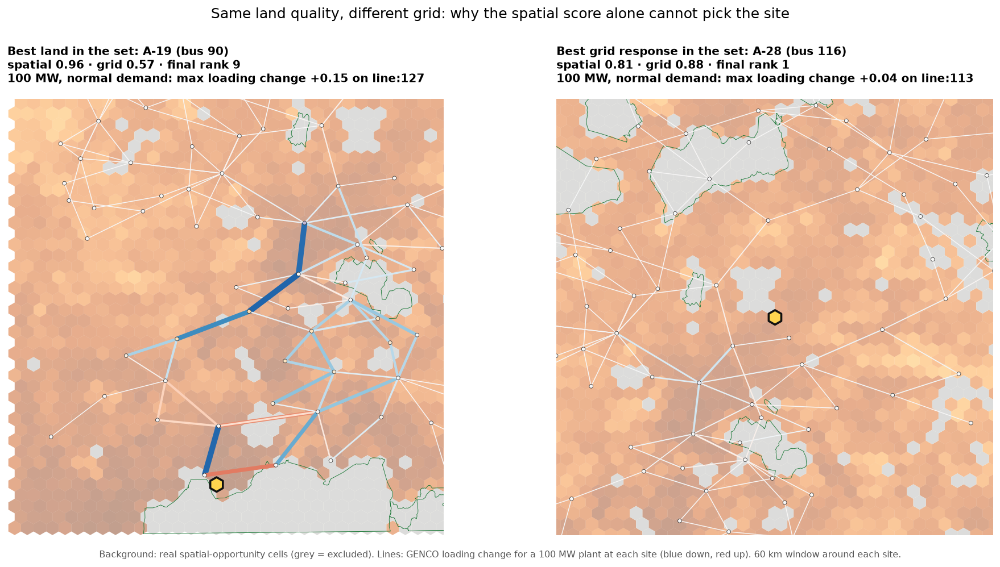
The point the study is built to make shows up in A-19: the best land in the whole set (0.96), yet ninth, because its bus is a weak point in the benchmark grid. The top three keep their places under all three weight profiles, so that conclusion does not depend on the weights.
The wildfire map is driven mostly by fuel cover (montado oak and shrub) rather than past burns, because the 10-year MODIS record in this box is sparse. Each of the five screened outages does what you would expect physically: it loads its parallel or neighbouring circuit hardest, by +0.1 to +1.0 of rating depending on the condition.
8. How we checked it
pandapower, a conventional AC power-flow solver, solved 73 of the scenarios exactly from the identical modified inputs: all 24 baselines, the top ten sites, every outage for the top three, evenly spaced hold-outs, the cases with the largest predicted changes, and the two lowest-ranked sites. For each case we report absolute agreement and agreement on the change separately.
49 of 49
comparable cases meet the strict change criteria (voltage change error ≤ 0.002 pu, branch power change error ≤ 10 MW mean and ≤ 120 MW worst line). Median voltage-change error 0.0001 pu; median branch-power-change error 0.6 MW.
35 of 73 on absolute values too
Median absolute agreement is 0.0013 pu on voltage and 1.8 MW on branch power. The other 38 cases fail only the strictest gate, a 30 MW worst-single-branch limit; outage cases and 200 MW cases are where that happens.
Nothing hidden
The absolute offset of the checkpoint stays on the validation tab. Scenarios the AC solver cannot converge would appear as such rather than being removed.
Spatial checks
One coordinate system throughout, every line joins to exactly one PFDelta branch and two real buses, every site is within its 10 km connection radius, every layer carries provenance.
8b. What we learned about GENCO
Changes, almost one for one
Slope 0.95, R² 0.98 between GENCO and AC loading changes over 9,086 branch-scenario pairs; the direction of change agrees 99 % of the time when AC moves a line by more than 0.05 of its rating.
Error is local
Mean loading-change error is 0.007 on lines touching the injection bus or the removed line and 0.002 five or more hops away. AC confirmation can concentrate on that neighbourhood.
A free trust flag
GENCO reports a power-balance residual for every scenario. It rises with capacity and under outages and correlates with the error against AC (Spearman 0.59), so it can decide which cases go to the solver.
Speed changes the workflow
44 ms per scenario means the full matrix re-runs in minutes after any change to a layer, a weight or a site list, which makes sensitivity analysis routine instead of a one-off.
The operating envelope is visible from inside
Sweeping one site's load level from 0.5 to 1.5 of the training snapshot, GENCO's error against AC grows from 0.2 MW at the centre to 27 to 39 MW at the edges, and its own power-balance residual grows from 0.07 to 9 to 17 MW over the same range. Beyond 1.35 the AC solver no longer converges; GENCO still answers, with a residual of 12 to 23 MW that says "do not trust this".
Three seeds, one shortlist
Running all 2,184 scenarios through the three released checkpoints, the worst-affected line is the same in 91 % of scenarios and the median spread of a scenario's maximum loading change is 0.035. A-28, A-13 and A-20 stay in the grid-score top five whichever seed is used.
An outage ranking for every line
An outage-only GENCO baseline for each of the 177 connectivity-preserving branches under each condition (744 scenarios, about a minute) ranks the whole benchmark by consequence; the nine branches whose loss splits the network are listed rather than screened.
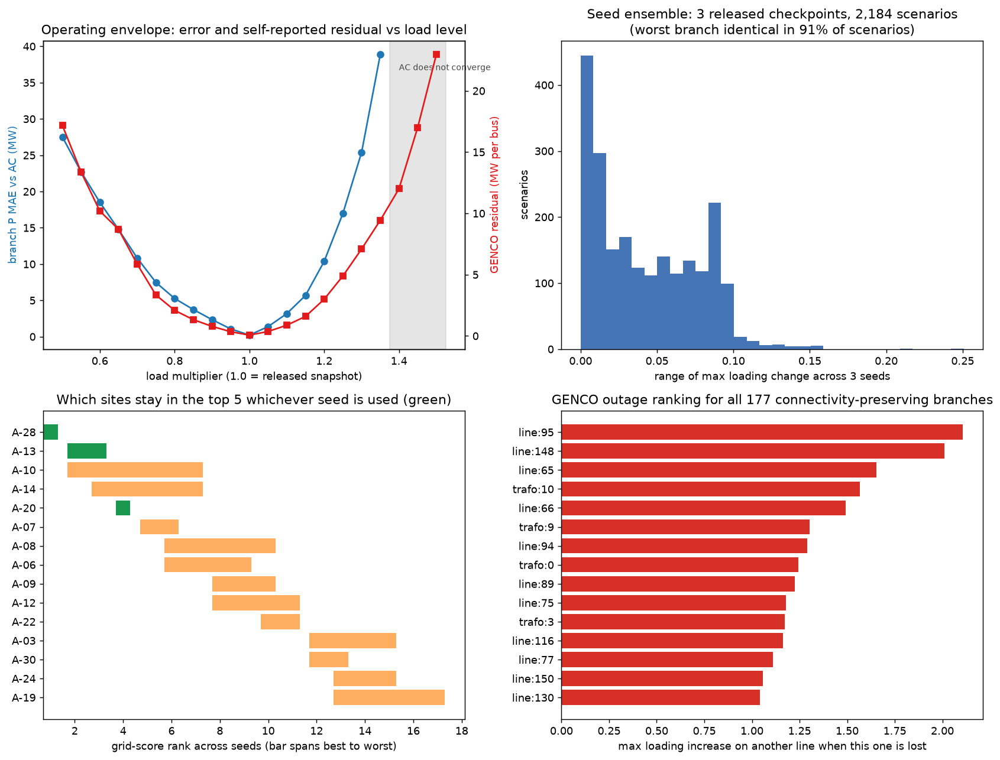
9. Limits to keep in mind
- The grid is a benchmark laid over real geography. Line corridors, and therefore exposure and consequence, are illustrative. The method transfers to a real network model; the numbers do not.
- The plant is a fixed active-power injection: no reactive support, no battery dispatch, no generator redispatch. Operating conditions scale all loads uniformly.
- GENCO's error grows with injected capacity and near a removed line. The screen flags those cases for AC confirmation through GENCO's own power-balance residual, which correlates with its error (Spearman 0.59).
- Exposure is a 10-year burned-area record plus fuel cover at 500 m and 10 m resolution. It is not a fire-weather or ignition model.
- Weights are stated preferences. The sensitivity analysis shows which conclusions survive them and which do not.
10. Glossary
- Bus
- A node in the network, roughly a substation. IEEE-118 has 118 of them.
- Branch
- A line or transformer between two buses. 186 in IEEE-118, 173 lines and 13 transformers.
- Loading ratio
- Apparent power on a branch divided by its rating. Above 1.0 means overloaded.
- pu (per unit)
- Voltage as a fraction of nominal. 1.00 is nominal; 0.95 to 1.05 is the usual comfort band.
- N-0 / N-1
- Intact network / network with one element out of service.
- Delta
- A scenario value minus the matching baseline value. The quantity all screening here uses.
- PFDelta
- The public dataset of solved power-flow cases GENCO was trained on; Task 1.3 is the IEEE-118 split with topology changes.
- Natura 2000
- The EU network of protected sites under the Habitats and Birds Directives.
Figures
Generated by the pipeline from the outputs; the same files are used in the written report.
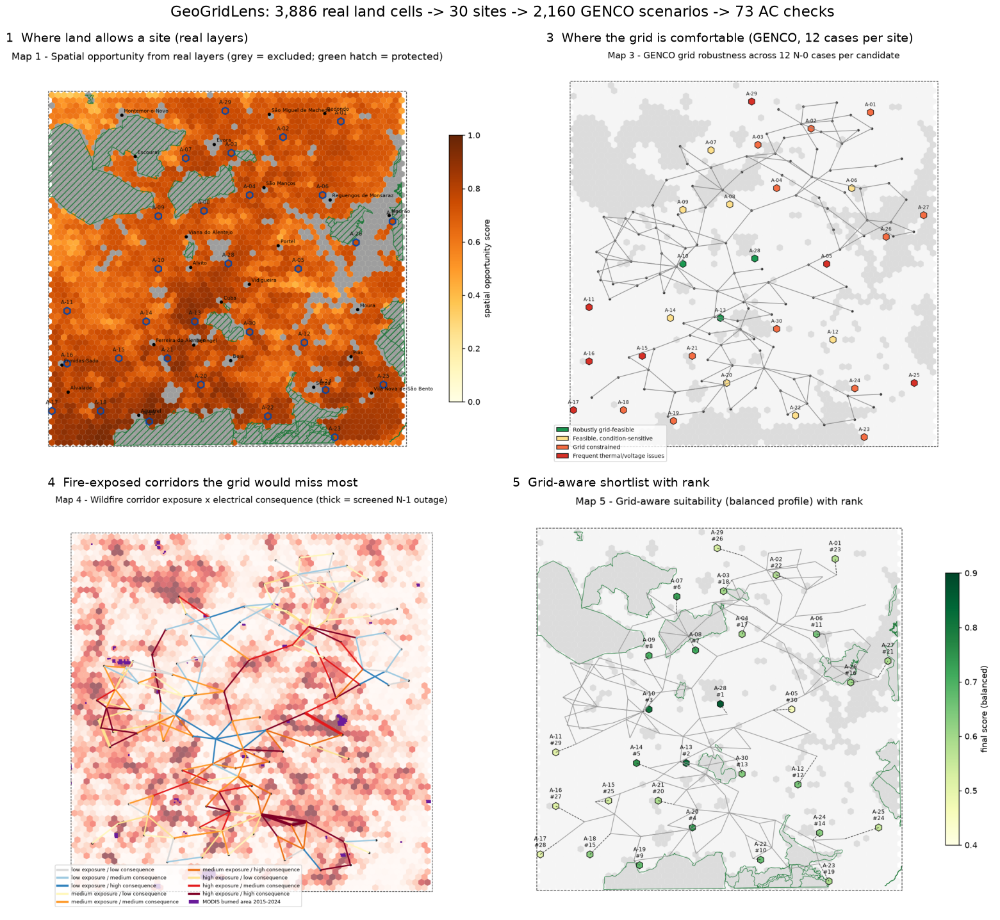
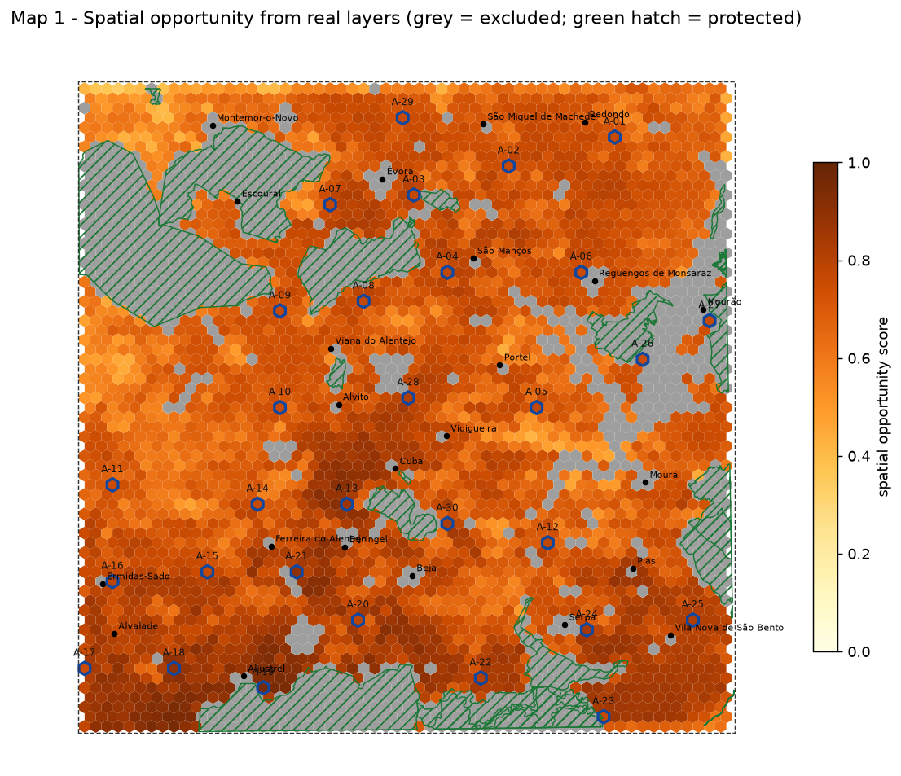
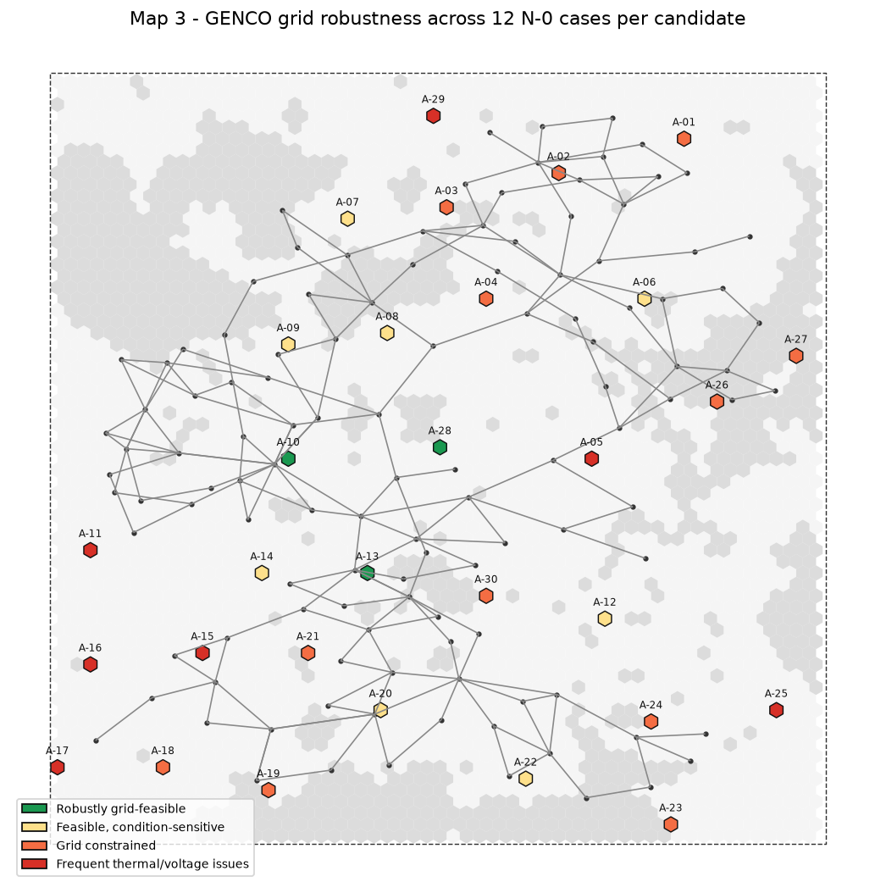
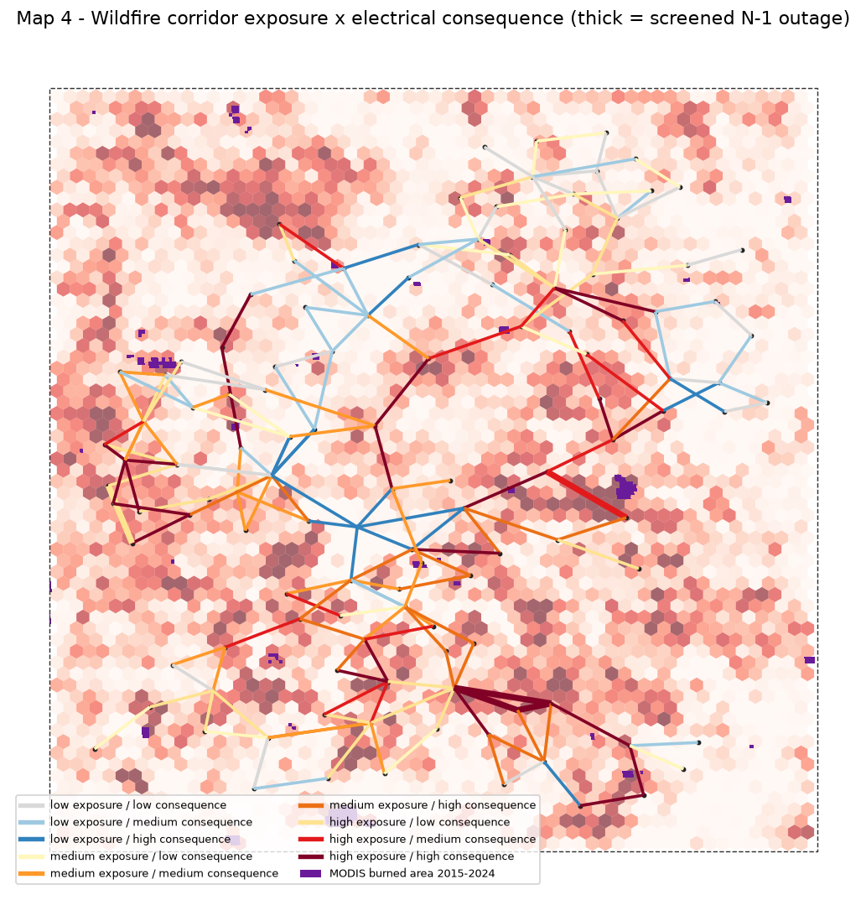
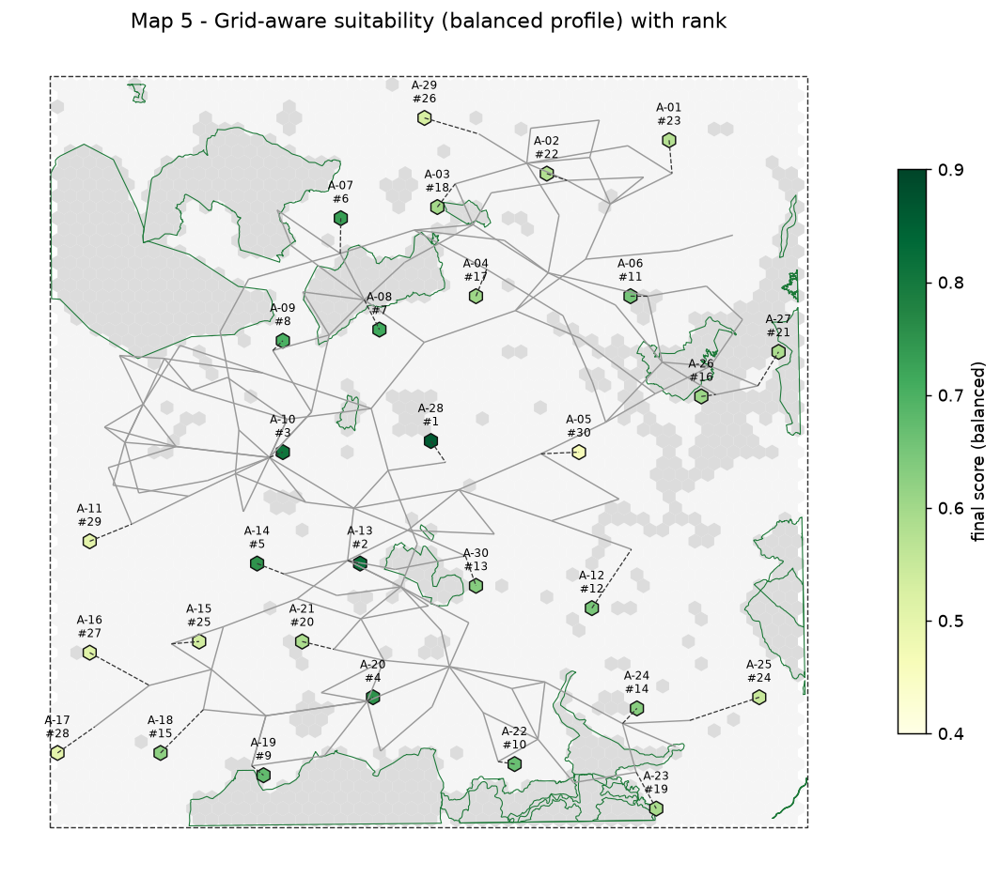
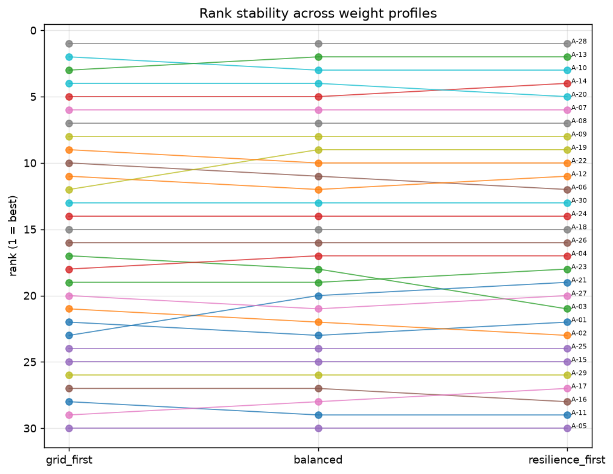
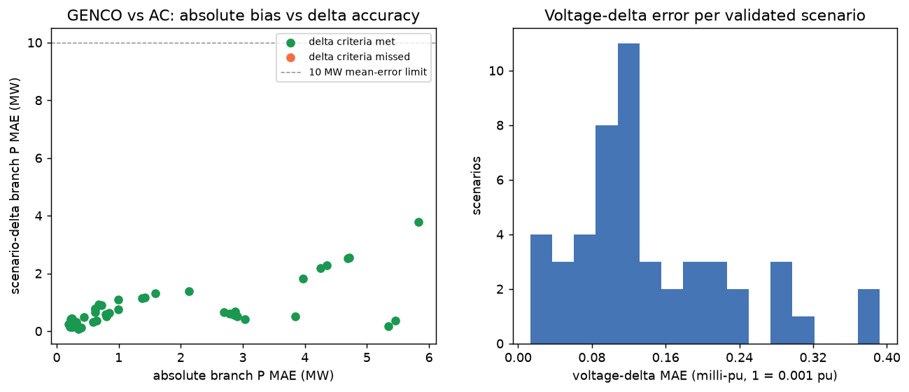
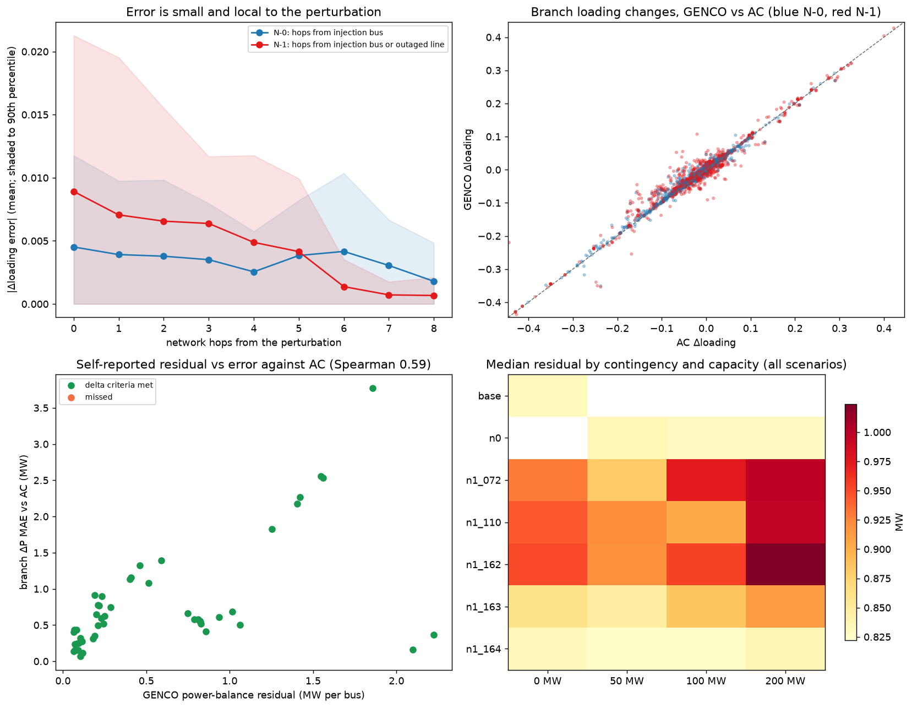
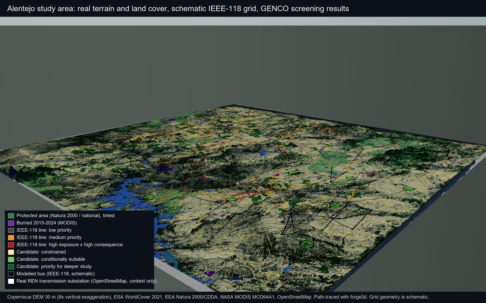
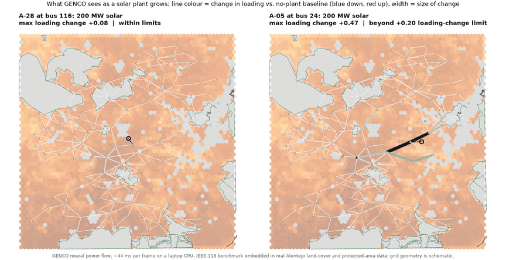
11. Reproduce it
cd C:\genco_project\geogridlens .\scripts\run_case_study_pipeline.ps1 # fetch → layers → manifest → GENCO → score → AC → export → report .\.venv\Scripts\streamlit.exe run app\case_study_dashboard.py .\.venv\Scripts\python.exe -m pytest tests
The full write-up with figures is CASE_STUDY_REPORT.md; every number in it is regenerated from the outputs.